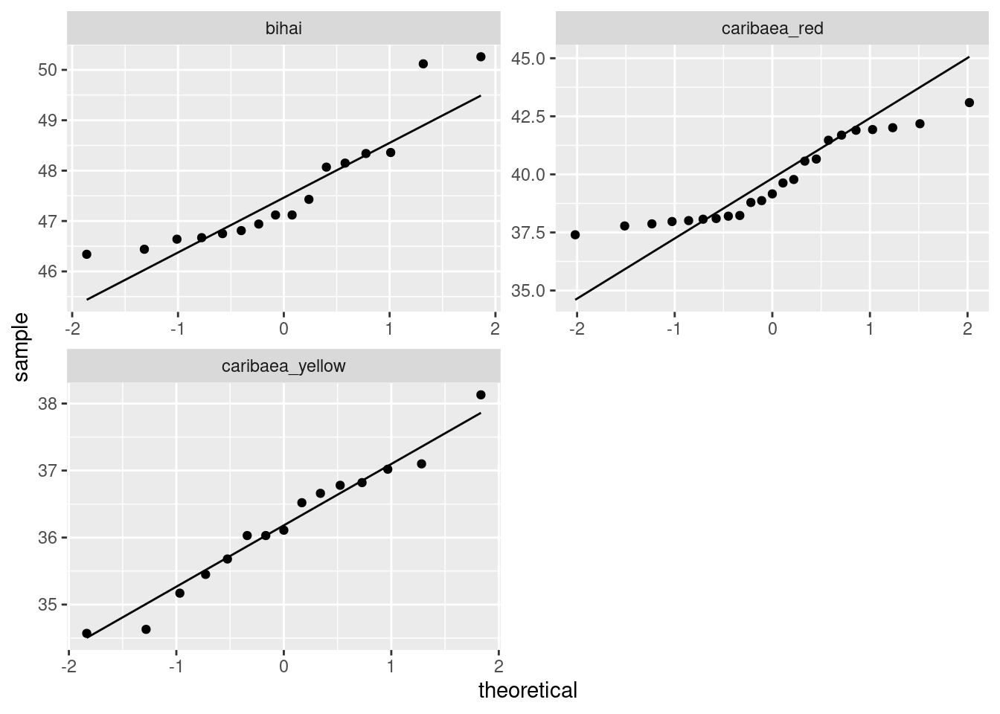
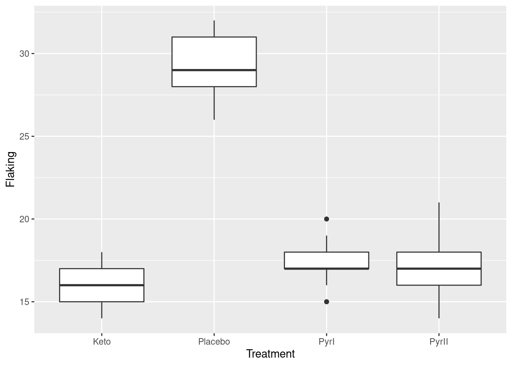
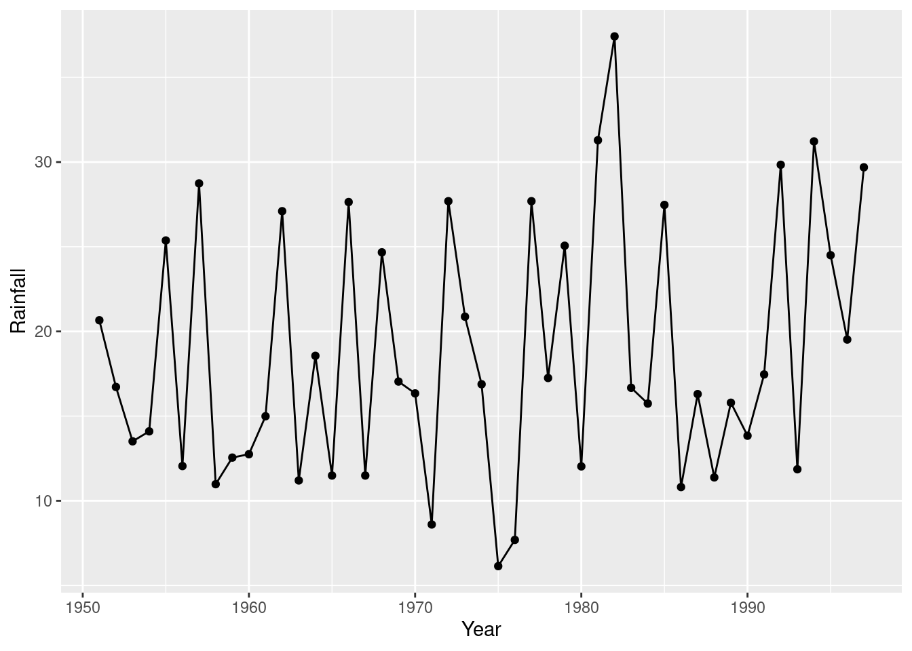

Chapter 18 Regression with categorical variables
18.1 Crickets revisited
This is a continuation of the crickets problem that you may have seen before (minus the data tidying).
Male tree crickets produce “mating songs” by rubbing their wings together to produce a chirping sound. It is hypothesized that female tree crickets identify males of the correct species by how fast (in chirps per second) the male’s mating song is. This is called the “pulse rate”. Some data for two species of crickets are in link as a CSV file. The columns are species (text), temperature, and pulse rate (numbers). This is the tidied version of the data set that the previous version of this question had you create. The research question is whether males of the different species have different average pulse rates. It is also of interest to see whether temperature has an effect, and if so, what.
Read the data into R and display what you have.
Do a two-sample \(t\)-test to see whether the mean pulse rates differ between species. What do you conclude?
Can you do that two-sample \(t\)-test as a regression?
The analysis in the last part did not use temperature, however. Is it possible that temperature also has an effect? To assess this, draw a scatterplot of pulse rate against temperature, with the points distinguished, somehow, by the species they are from.5 This was the actual reason I thought of this question originally: I wanted you to do this.
What does the plot tell you that the \(t\)-test doesn’t? How would you describe differences in pulse rates between species now?
Fit a regression predicting pulse rate from species and temperature. Compare the P-value for species in this regression to the one from the \(t\)-test. What does that tell you?
Make suitable residual plots for the regression
pulse.1.
18.2 Pulse rates and marching
Forty students, some male and some female, measured their resting pulse rates. Then they marched in place for one minute and measured their pulse rate again. Our aim is to use regression to predict the pulse rate after the marching from the pulse rate before, and to see whether that is different for males and females. The data is in .
Read in and display (some of) the data.
Make a suitable graph using all three variables, adding appropriate regression line(s) to the plot.
Explain briefly but carefully how any effects of pulse rate before on pulse rate after, and also of sex on pulse rate after, show up on your plot. (If either explanatory variable has no effect, explain how you know.)
Run a regression predicting pulse rate after from the other two variables. Display the output.
Looking at your graph, does the significance (or lack of) of each of your two explanatory variables surprise you? Explain briefly.
What does the numerical value of the Estimate for
Sexin your regression output mean, in the context of this data set? Explain briefly.
My solutions follow:
18.3 Crickets revisited
This is a continuation of the crickets problem that you may have seen before (minus the data tidying).
Male tree crickets produce “mating songs” by rubbing their wings together to produce a chirping sound. It is hypothesized that female tree crickets identify males of the correct species by how fast (in chirps per second) the male’s mating song is. This is called the “pulse rate”. Some data for two species of crickets are in link as a CSV file. The columns are species (text), temperature, and pulse rate (numbers). This is the tidied version of the data set that the previous version of this question had you create. The research question is whether males of the different species have different average pulse rates. It is also of interest to see whether temperature has an effect, and if so, what.
- Read the data into R and display what you have.
Solution
Nothing terribly surprising here:
##
## ── Column specification ──────────────────────────────────────────────────────────────────────────────────────────────────────────────────────────────────────────────────────────────────────
## cols(
## species = col_character(),
## temperature = col_double(),
## pulse_rate = col_double()
## )31 crickets, which is what I remember. What species are there?
That looks good. We proceed.
\(\blacksquare\)
- Do a two-sample \(t\)-test to see whether the mean pulse rates differ between species. What do you conclude?
Solution
Drag your mind way back to this:
##
## Welch Two Sample t-test
##
## data: pulse_rate by species
## t = 5.2236, df = 28.719, p-value = 1.401e-05
## alternative hypothesis: true difference in means is not equal to 0
## 95 percent confidence interval:
## 14.08583 32.22677
## sample estimates:
## mean in group exclamationis mean in group niveus
## 85.58571 62.42941There is strong evidence of a difference in means (a P-value around 0.00001), and the confidence interval says that the mean chirp rate is higher for exclamationis. That is, not just for the crickets that were observed here, but for all crickets of these two species.
\(\blacksquare\)
- Can you do that two-sample \(t\)-test as a regression?
Solution
Hang onto the “pulse rate depends on species” idea and try
that in lm:
##
## Call:
## lm(formula = pulse_rate ~ species, data = crickets)
##
## Residuals:
## Min 1Q Median 3Q Max
## -20.486 -9.458 -1.729 13.342 22.271
##
## Coefficients:
## Estimate Std. Error t value Pr(>|t|)
## (Intercept) 85.586 3.316 25.807 < 2e-16 ***
## speciesniveus -23.156 4.478 -5.171 1.58e-05 ***
## ---
## Signif. codes: 0 '***' 0.001 '**' 0.01 '*' 0.05 '.' 0.1 ' ' 1
##
## Residual standard error: 12.41 on 29 degrees of freedom
## Multiple R-squared: 0.4797, Adjusted R-squared: 0.4617
## F-statistic: 26.74 on 1 and 29 DF, p-value: 1.579e-05I had to use “model 0” for this since I already have a
pulse.1 below and I didn’t want to go down and renumber
everything.
Look along the speciesniveus line. Ignoring the fact that it
is negative, the \(t\)-statistic is almost the same as before (5.17 vs.
5.22) and so is the P-value (\(1.4 \times 10^{-5}\) vs. \(1.6 \times 10^{-5}\)).
Why aren’t they exactly the same? Regression is assuming equal
variances everywhere (that is, within the two species), and
before, we did the Welch-Satterthwaite test that does not assume equal
variances. What if we do the pooled \(t\)-test instead?
##
## Two Sample t-test
##
## data: pulse_rate by species
## t = 5.1706, df = 29, p-value = 1.579e-05
## alternative hypothesis: true difference in means is not equal to 0
## 95 percent confidence interval:
## 13.99690 32.31571
## sample estimates:
## mean in group exclamationis mean in group niveus
## 85.58571 62.42941Now the regression and the \(t\)-test do give exactly the same answers. We’ll think about that equal-spreads assumption again later.
\(\blacksquare\)
- The analysis in the last part did not use temperature, however. Is it possible that temperature also has an effect? To assess this, draw a scatterplot of pulse rate against temperature, with the points distinguished, somehow, by the species they are from.6 This was the actual reason I thought of this question originally: I wanted you to do this.
Solution
One of the wonderful things about ggplot is that doing
the obvious thing works:

\(\blacksquare\)
- What does the plot tell you that the \(t\)-test doesn’t? How would you describe differences in pulse rates between species now?
Solution
The plot tells you that (for both species) as temperature goes up, pulse rate goes up as well. Allowing for that, the difference in pulse rates between the two species is even clearer than it was before. To see an example, pick a temperature, and note that the mean pulse rate at that temperature seems to be at least 10 higher for exclamationis, with a high degree of consistency. The \(t\)-test mixed up all the pulse rates at all the different temperatures. Even though the conclusion was clear enough, it could be clearer if we incorporated temperature into the analysis. There was also a potential source of unfairness in that the exclamationis crickets tended to be observed at higher temperatures than niveus crickets; since pulse rates increase with temperature, the apparent difference in pulse rates between the species might have been explainable by one species being observed mainly in higher temperatures. This was utterly invisible to us when we did the \(t\)-test, but it shows the importance of accounting for all the relevant variables when you do your analysis.7 And it shows the value of looking at relevant plots. If the species had been observed at opposite temperatures, we might have concluded8 Mistakenly. that niveus have the higher pulse rates on average. I come back to this later when I discuss the confidence interval for species difference that comes out of the regression model with temperature.
\(\blacksquare\)
- Fit a regression predicting pulse rate from species and temperature. Compare the P-value for species in this regression to the one from the \(t\)-test. What does that tell you?
Solution
This is actually a so-called “analysis of covariance model”, which properly belongs in D29, but it’s really just a regression:
##
## Call:
## lm(formula = pulse_rate ~ species + temperature, data = crickets)
##
## Residuals:
## Min 1Q Median 3Q Max
## -3.0128 -1.1296 -0.3912 0.9650 3.7800
##
## Coefficients:
## Estimate Std. Error t value Pr(>|t|)
## (Intercept) -7.21091 2.55094 -2.827 0.00858 **
## speciesniveus -10.06529 0.73526 -13.689 6.27e-14 ***
## temperature 3.60275 0.09729 37.032 < 2e-16 ***
## ---
## Signif. codes: 0 '***' 0.001 '**' 0.01 '*' 0.05 '.' 0.1 ' ' 1
##
## Residual standard error: 1.786 on 28 degrees of freedom
## Multiple R-squared: 0.9896, Adjusted R-squared: 0.9888
## F-statistic: 1331 on 2 and 28 DF, p-value: < 2.2e-16The P-value for species is now \(6.27\times 10^{-14}\) or 0.00000000000006, which is even less than the P-value of 0.00001 that came out of the \(t\)-test. That is to say, when you know temperature, you can be even more sure of your conclusion that there is a difference between the species.
The R-squared for this regression is almost 99%, which says that if you know both temperature and species, you can predict the pulse rate almost exactly.
In the regression output, the slope for species is about \(-10\). It is
labelled speciesniveus. Since species is categorical,
lm uses the first category, exclamationis, as the
baseline and expresses each other species relative to that. Since the
slope is about \(-10\), it says that at any given temperature, the mean
pulse rate for niveus is about 10 less than for
exclamationis. This is pretty much what the scatterplot told
us.
We can go a little further here:
## 2.5 % 97.5 %
## (Intercept) -12.436265 -1.985547
## speciesniveus -11.571408 -8.559175
## temperature 3.403467 3.802038The second line says that the pulse rate for niveus is between about 8.5 and 11.5 less than for exclamationis, at any given temperature (comparing the two species at the same temperature as each other, but that temperature could be anything). This is a lot shorter than the CI that came out of the \(t\)-test, that went from 14 to 32. This is because we are now accounting for temperature, which also makes a difference. (In the \(t\)-test, the temperatures were all mixed up). What we also see is that the \(t\)-interval is shifted up compared to the one from the regression. This is because the \(t\)-interval conflates9 Mixes up. two things: the exclamationis crickets do have a higher pulse rate, but they were also observed at higher temperatures, which makes it look as if their pulse rates are more higher10 This is actually grammatically correct. than they really are, when you account for temperature.
This particular model constrains the slope with temperature to be the same for both species (just the intercepts differ). If you want to allow the slopes to differ between species, you add an interaction between temperature and species:
##
## Call:
## lm(formula = pulse_rate ~ species * temperature, data = crickets)
##
## Residuals:
## Min 1Q Median 3Q Max
## -3.7031 -1.3417 -0.1235 0.8100 3.6330
##
## Coefficients:
## Estimate Std. Error t value Pr(>|t|)
## (Intercept) -11.0408 4.1515 -2.659 0.013 *
## speciesniveus -4.3484 4.9617 -0.876 0.389
## temperature 3.7514 0.1601 23.429 <2e-16 ***
## speciesniveus:temperature -0.2340 0.2009 -1.165 0.254
## ---
## Signif. codes: 0 '***' 0.001 '**' 0.01 '*' 0.05 '.' 0.1 ' ' 1
##
## Residual standard error: 1.775 on 27 degrees of freedom
## Multiple R-squared: 0.9901, Adjusted R-squared: 0.989
## F-statistic: 898.9 on 3 and 27 DF, p-value: < 2.2e-16To see whether adding the interaction term added anything to the
prediction,11 Though it’s hard to imagine being able to improve on an R-squared of 99%.
compare the model with and without using anova:
There’s no significant improvement by adding the interaction, so
there’s no evidence that having different slopes for each species is
necessary. This is the same interpretation as any anova for
comparing two regressions: the two models are not significantly
different in fit, so go with the simpler one, that is, the one without
the interaction.
Note that anova gave the same P-value as did the
\(t\)-test for the slope coefficient for the interaction in
summary, 0.254 in both cases. This is because there were only
two species and therefore only one slope coefficient was required to
distinguish them. If there had been three species, we would have had
to look at the anova output to hunt for a difference among
species, since there would have been two slope coefficients, each with
its own P-value.12 This wouldn’t have told us about the overall effect of species.
If you haven’t seen interactions before, don’t worry about this. The
idea behind it is that we are testing whether we needed lines with
different slopes and we concluded that we don’t. Don’t worry so much
about the mechanism behind pulse.2; just worry about how it
somehow provides a way of modelling two different slopes, one for each
species, which we can then test to see whether it helps.
The upshot is that we do not need different slopes; the model
pulse.1 with the same slope for each species describes what
is going on.
ggplot makes it almost laughably easy to add regression lines
for each species to our plot, thus:
ggplot(crickets, aes(x = temperature, y = pulse_rate, colour = species)) +
geom_point() + geom_smooth(method = "lm", se = F)## `geom_smooth()` using formula 'y ~ x'
The lines are almost exactly parallel, so having the same slope for each species makes perfect sense.
\(\blacksquare\)
- Make suitable residual plots for the regression
pulse.1.
Solution
First, the plot of residuals against fitted values (after all, it is a regression):

This looks nice and random.
Now, we plot the residuals against the explanatory variables. There
are two, temperature and species, but the latter is categorical. We’ll
have some extra issues around species, but before we get to that, we
have to remember that the data and the output from the regression are
in different places when we plot them. There are different ways to get
around that. Perhaps the simplest is to use pulse.1 as our
“default” data frame and then get temperature from the
right place:

I don’t see anything untoward there.
Species. We want to compare the residuals for the two species, which is categorical. Since the residuals are quantitative, this suggests a boxplot. Remembering to get species from the right place again, that goes like this:

For the residuals, the median should be zero within each group, and the two groups should be approximately normal with mean 0 and about the same spread. Same spread looks OK, since the boxes are almost exactly the same height, but the normality is not quite there, since both distributions are a little bit skewed to the right. That would also explain why the median residual in each group is a little bit less than zero, because the mathematics requires the overall mean residual to be zero, and the right-skewness would make the mean higher than the median.
Is that non-normality really problematic? Well, I could look at the normal quantile plot of all the residuals together:

There’s a little weirdness at the top, and a tiny indication of a curve (that would suggest a little right-skewedness), but not really much to worry about. If that third-highest residual were a bit lower (say, 3 rather than 3.5) and maybe if the lowest residual was a bit lower, I don’t think we’d have anything to complain about at all.
So, I’m not worried.
\(\blacksquare\)
18.4 Pulse rates and marching
Forty students, some male and some female, measured their resting pulse rates. Then they marched in place for one minute and measured their pulse rate again. Our aim is to use regression to predict the pulse rate after the marching from the pulse rate before, and to see whether that is different for males and females. The data is in .
- Read in and display (some of) the data.
Solution
As usual:
##
## ── Column specification ──────────────────────────────────────────────────────────────────────────────────────────────────────────────────────────────────────────────────────────────────────
## cols(
## Sex = col_character(),
## Before = col_double(),
## After = col_double()
## )\(\blacksquare\)
- Make a suitable graph using all three variables, adding appropriate regression line(s) to the plot.
Solution
Two quantitative and one categorical says scatterplot, with colour distinguishing the categories (two here). geom_smooth adds a regression line to the plot for each Sex, which is what we want. I used se=F to remove the grey envelopes from the plot (because I thought they confused the issue):
## `geom_smooth()` using formula 'y ~ x'
Having only one regression line is not so good because that only shows that pulse rate after goes up with pulse rate before, but not if and how the sexes differ.
Extra: I took a shortcut of the process here, to make the question shorter. In practice, what you’d do is to put smooth trends on the plot first:
## `geom_smooth()` using method = 'loess' and formula 'y ~ x'
The red trend looks curved, but if you look carefully, pretty much all of13 My mind just jumped to a former German soccer player by the name of Klaus Allofs. the evidence for the curve comes from that point on the right with pulse rate before over 90 and pulse rate after around 100. If it weren’t for that, the red trend would be pretty close to linear. As you’ll recall, a decision about the kind of trend based on one observation is a pretty flimsy decision.
Then, having seen that the trends are not obviously curved, you would draw the plot with the straight lines. (Fitting separate curves is a whole different story that I didn’t want to get into.)
\(\blacksquare\)
- Explain briefly but carefully how any effects of pulse rate before on pulse rate after, and also of sex on pulse rate after, show up on your plot. (If either explanatory variable has no effect, explain how you know.)
Solution
There is an upward trend, so
if the pulse rate before is higher, so is the pulse rate after. This is true for both males and females. (Or, holding Sex fixed, that is, comparing two people of the same sex.)
The red line is always above the blue line, so at any given Before pulse rate, the After pulse rate for a female is predicted to be higher than that for a male.
Note that you have to be careful: when talking about the effect of each explanatory variable, you have to hold the other one constant (in general, hold all the other ones constant). If you can word that in a way that makes sense in the context of the data you are looking at, so much the better.
\(\blacksquare\)
- Run a regression predicting pulse rate after from the other two variables. Display the output.
Solution
Thus:
##
## Call:
## lm(formula = After ~ Before + Sex, data = march)
##
## Residuals:
## Min 1Q Median 3Q Max
## -11.8653 -4.6319 -0.4271 3.3856 16.0047
##
## Coefficients:
## Estimate Std. Error t value Pr(>|t|)
## (Intercept) 19.8003 7.9217 2.499 0.0170 *
## Before 0.9064 0.1127 8.046 1.2e-09 ***
## SexMale -4.8191 2.2358 -2.155 0.0377 *
## ---
## Signif. codes: 0 '***' 0.001 '**' 0.01 '*' 0.05 '.' 0.1 ' ' 1
##
## Residual standard error: 6.918 on 37 degrees of freedom
## Multiple R-squared: 0.6468, Adjusted R-squared: 0.6277
## F-statistic: 33.87 on 2 and 37 DF, p-value: 4.355e-09Extra: if you want “all the other variables except the response” as explanatory, there is also this shortcut:
##
## Call:
## lm(formula = After ~ ., data = march)
##
## Residuals:
## Min 1Q Median 3Q Max
## -11.8653 -4.6319 -0.4271 3.3856 16.0047
##
## Coefficients:
## Estimate Std. Error t value Pr(>|t|)
## (Intercept) 19.8003 7.9217 2.499 0.0170 *
## SexMale -4.8191 2.2358 -2.155 0.0377 *
## Before 0.9064 0.1127 8.046 1.2e-09 ***
## ---
## Signif. codes: 0 '***' 0.001 '**' 0.01 '*' 0.05 '.' 0.1 ' ' 1
##
## Residual standard error: 6.918 on 37 degrees of freedom
## Multiple R-squared: 0.6468, Adjusted R-squared: 0.6277
## F-statistic: 33.87 on 2 and 37 DF, p-value: 4.355e-09\(\blacksquare\)
- Looking at your graph, does the significance (or lack of) of each of your two explanatory variables surprise you? Explain briefly.
Solution
We noted a clear upward trend before, for both sexes, so there is no surprise that the Before pulse rate is significant.
The red dots (females) on the graph seemed to be on average above the blue ones (males), at least for similar before pulse rates. (This is not completely convincing, so you are entitled to be surprised also; note that the P-value, while significant, is not that small).
Extra: comparing the lines is less convincing, because how do we get a feel for whether these lines are more different than chance? One deceiving way to (fail to) get a feel for this is to re-draw our plot but with the grey envelopes:
## `geom_smooth()` using formula 'y ~ x'
The grey envelopes overlap substantially, which would make you think the lines are not significantly different. But, this is not the right way to compare the lines. It is a similar problem to that of comparing two means (that we would normally do with a two-sample test of some kind) by working out the two one-sample confidence intervals, and seeing whether they overlap. If they do not, then you can be sure that the means differ, but if they do overlap, then you cannot say anything about whether the means differ: maybe they do, maybe they don’t. This one is analogous; the grey envelopes overlap, so maybe the lines differ, maybe they don’t. Looking at the grey envelopes in this case gives you no insight about whether males and females differ.
Here is a short discussion of this issue (in the context of comparing two means).
\(\blacksquare\)
- What does the numerical value of the Estimate for
Sexin your regression output mean, in the context of this data set? Explain briefly.
Solution
The estimate is labelled SexMale, and its value is \(-4.8\).
Sex is a categorical variable, so it has a baseline category, which is the first one, Female. The Estimate SexMale shows how males compare to the baseline (females), at a fixed Before pulse rate.
This value is \(-4.8\), so, at any Before pulse rate, the male After pulse rate is predicted to be 4.8 less than the female one.
I think you have to mention the value \(-4.8\), so that you can talk intelligently about what it means for these data.
Extra: the implication of our model is that the predicted difference is the same all the way along. You might have your doubts about that; you might think the lines are closer together on the left and further apart on the right. Another way to think about this is whether the lines are parallel: that is, whether they have the same slope. I’m inclined to think they do; the data points are fairly scattered, and I think the slopes would have to be a lot more different to be significantly different. But you don’t have to take my word for it: we can test this by adding an interaction term to the model. You might have seen this in ANOVA, where you are assessing the effect of one factor at different levels of the other. This is more or less the same idea. Note the * rather than the + in the model formula:14 To be precise, the * means “the main effects and the interaction together”; if you want to talk about just the interaction term, you denote it by :; note the Before:SexMale term in the summary table.
##
## Call:
## lm(formula = After ~ Before * Sex, data = march)
##
## Residuals:
## Min 1Q Median 3Q Max
## -11.2831 -4.3638 -0.3965 3.4077 16.6188
##
## Coefficients:
## Estimate Std. Error t value Pr(>|t|)
## (Intercept) 13.4390 11.1416 1.206 0.236
## Before 0.9991 0.1604 6.230 3.43e-07 ***
## SexMale 7.9470 15.8095 0.503 0.618
## Before:SexMale -0.1846 0.2263 -0.816 0.420
## ---
## Signif. codes: 0 '***' 0.001 '**' 0.01 '*' 0.05 '.' 0.1 ' ' 1
##
## Residual standard error: 6.949 on 36 degrees of freedom
## Multiple R-squared: 0.6532, Adjusted R-squared: 0.6243
## F-statistic: 22.6 on 3 and 36 DF, p-value: 2.11e-08The Before:SexMale term tests the interaction, and you see it is nowhere near significant. There is no justification for having lines with different slopes for males and females.
We were lucky here in that Sex has only two levels, so looking at the summary gave us what we wanted. If we had had an Other category for Sex, for people who don’t identify with either male or female, there would be two Estimates in the summary table, one comparing Male with Female, and one comparing Other with Female.15 Female is the baseline, so everything gets compared with that, whether you like it or not.
But maybe the significant difference is Male vs. Other, and we would never see it.
To look for any effect of a categorical variable, the right way is to use drop1, to see which variables, including categorical ones, can be removed as a whole, thus:16 The test piece says to do an \(F\)-test, which is different from without the quotes, which would mean not to do any tests, F without quotes meaning FALSE.
This only lists things that can be removed, in this case the interaction. It is not significant, so out it comes (resulting in our model march.1):
Both remaining explanatory variables are significant, so we need to keep them both.
Our categorical explanatory variable has only two levels, so drop1 and summary give the exact same P-values.
Extra 2:
Let’s go back and look at our data set again:
You might have been thinking, when we started, that these are before and after measurements on the same people, and so what we have here is matched pairs. So we do, but it’s not the kind of matched pairs we are accustomed to. Let’s begin by taking differences, getting rid of the Before and After columns, and see what we have left:
In matched pairs, we are used to having one column of differences, and we test that for a mean or median of zero, to express no difference between before and after (or whatever it was). But now, we have an extra column Sex. We are not interested here in whether the differences average out to zero;17 I think it’s a given that pulse rates will be higher after exercise than before. we care more about whether the differences differ (!) between males and females. That is to say, we have a two-sample matched pairs test!
At this point, your head ought to be hurting!
However, at this point what we are saying is that if you believe that the difference is a good way to summarize the effect of the exercise, then we have one measurement for each person, independent because different people’s measurements will be independent. It doesn’t matter where they came from. We have measurements on two groups, so some kind of two-sample test will be good. Which kind? Let’s look at a graph, a good one now being a boxplot:

Or, if you like, a facetted normal quantile plot:

It seems to me that these are normal enough for a \(t\)-test, given the sample sizes (feel free to disagree):
The spreads look a bit different, so I think I would prefer the Welch test here:
##
## Welch Two Sample t-test
##
## data: difference by Sex
## t = 2.0307, df = 23.296, p-value = 0.05386
## alternative hypothesis: true difference in means is not equal to 0
## 95 percent confidence interval:
## -0.08848652 9.92181986
## sample estimates:
## mean in group Female mean in group Male
## 13.375000 8.458333This time, there is not quite a significant difference between males and females. (The P-value is just the other side of 0.05.) Though the conclusion is different, the P-values are fairly similar.
Which test is better? I think treating it as matched pairs is assuming that the differences after minus before are the things to be looking at. This assumes that the after measurements are the before measurement plus a something that depends on treatment, but not on the before measurement. This would fail, for example, if all the after measurements are two times the before ones (so that the difference would be bigger if the before score was bigger). The regression approach is more flexible, because any linear relationship is taken care of. A matched-pairs model of this kind is a special case of the regression model but with the slope set to be 1. In our regression, the slope is less than 1, but not by much.
\(\blacksquare\)